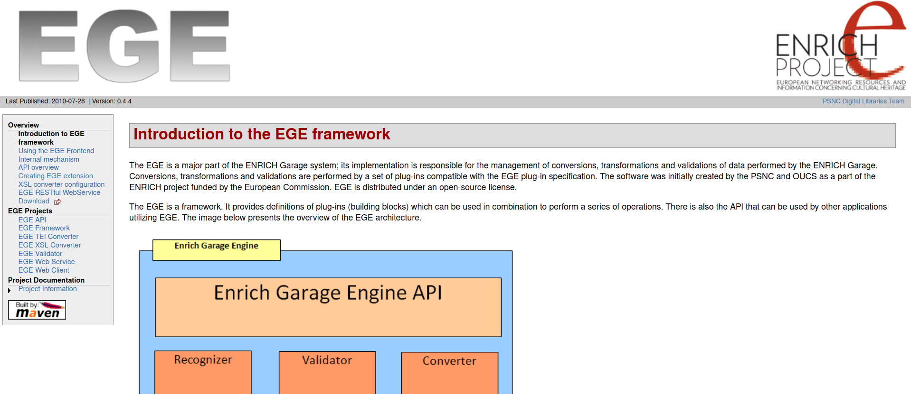

MEIGarage as an example of collaboration on long-living research software in different research communities
Anne Ferger, Daniel Röwenstrunk | Universität Paderborn
EGE to OxGarage
TEIC/oxgarage was created based on the ENRICH Garage Engine by the Text Encoding Initiative (TEI) community over 10 years ago and is used in many different contexts, e.g.


EGE
- written in Java
- licensed
- maven based documentation still available
OxGarage
- written in Java
- contact to some original developers
- research supporting software
- published on GitHub and licensed
- maven based documentation available
OxGarage to MEIGarage
Edirom/oxgarage was created based on OxGarage by the Music Encoding Initiative (MEI) community


OxGarage in NFDI4Culture
Goals
add further MEIGarage functionality
using (OxGarage) as a base for other research communities while allowing for more collaboration on code and making it more technically sustainable and FAIR
Working on MEIGarage in NFDI4Culture
In the framework of the NFDI4Culture project measures are taken to achieve a more sustainable and adaptable code base. These measures include a modularized, GitHub-based setup using CI and badges and checklists for FAIR software. Meetings were held for community building and sharing new developments and available documentation. The process of creating new plugins or additional "Garages" for other research communities is used to further evaluate the benefit of the measures and checking for necessary modifications.

Technical Sustainability
Current Setup
- TEIC/TEIGarage und Edirom/MEIGarage
- modules and plugins
- community meetings
Deployment
- Using GitHub Registry for artifacts, later Maven Central
- CI using GitHub Actions, Maven, Docker
- Docker and Kubernetes
Documentation and Maintenance
- Documentation for users
- Documentation for developers and maintainers
- maintenance of plugins by their authors
Checklists and Badges
- fair-software.eu
- repository: GitHub
- license
- community registry: nfdi4c software registry is currently being developed
- citation:CFF File
- checklist: open ssf best practices
- open ssf best practices badge
Integration of community specific code using plugins
Example meico
- cemfi/meico
- Edirom/meico-converter
- Conversions to and from MPM, MSM, MP3, MIDI